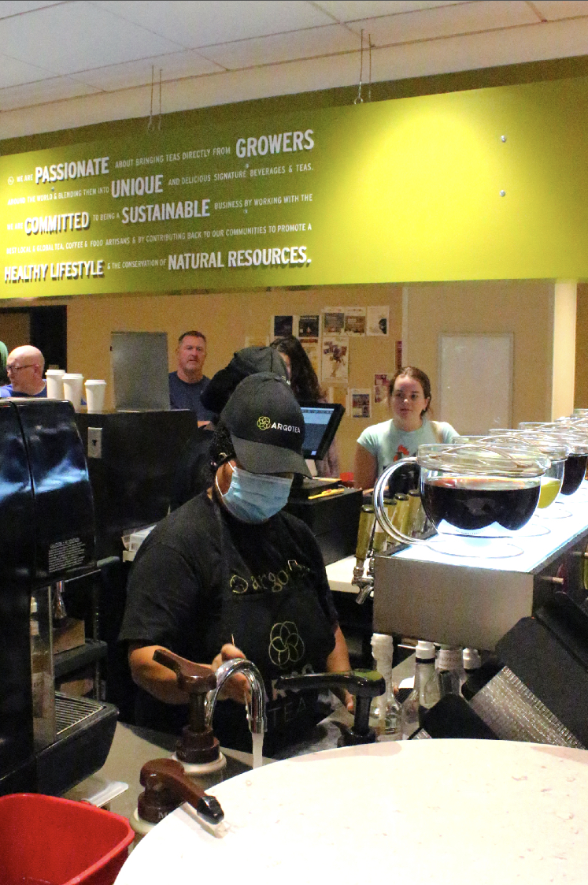
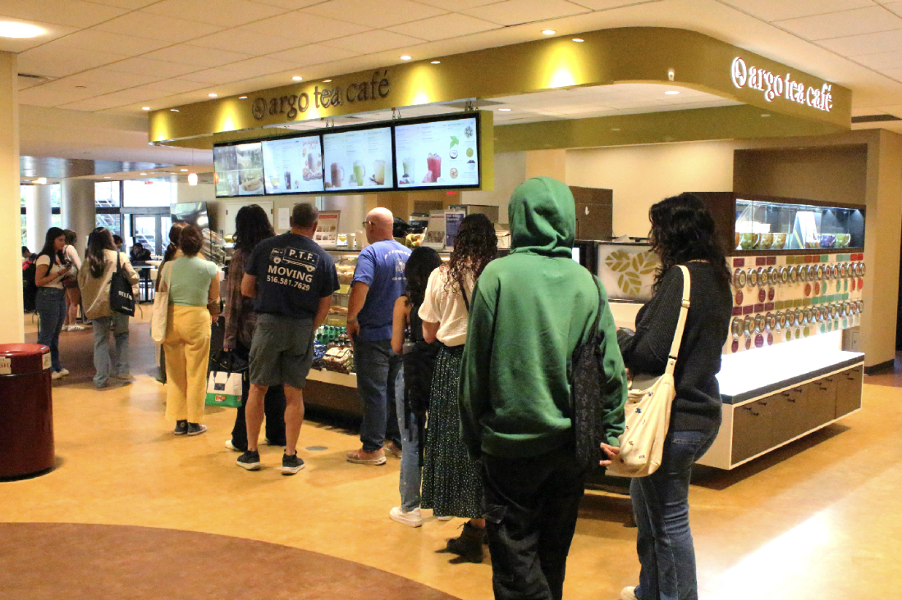
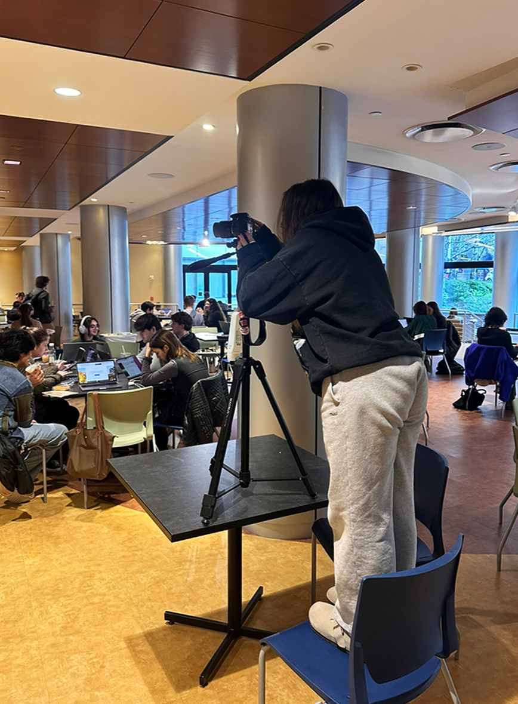
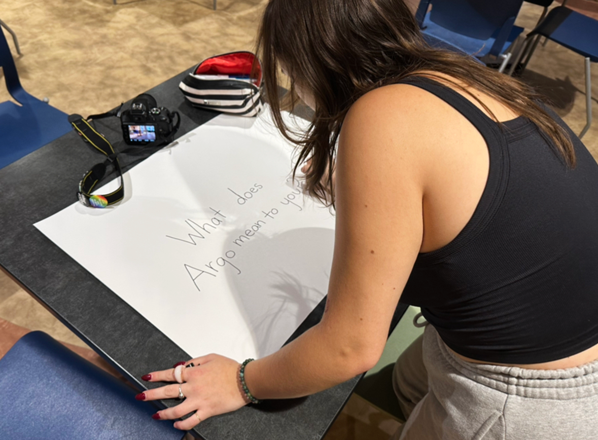

Ground for Community is a documentary surrounding the coffee shop Argo Tea, at Fordham University Lincoln Center. The students of FCLC each have their own personal connection to Argo, and the shop has provided more than just caffeine and sweet treats for its customers. Argo Tea and the women behind the counter, Ginger and Rosemary, are integral to the Fordham community, always greeting you with a smile, offering advice, and asking about your school assignments. This documentary explores how this coffee shop and these ladies have impacted the student experience at FCLC while demonstrating how little acts of kindness can create a comfortable, joyful environment.
The footage, including interviews with students and employees, captures the importance of this community space for everyone involved. Students and employees have developed heartwarming friendships, a fundamental part of the warm, vibrant feeling of the space. The documentary emphasizes Argo Tea as the only community-driven common area on campus. Additionally, it serves as a message to the Fordham administration to create and foster more of these spaces on campus.
Documentary Images
At the start of a new school week students meet with groups for class projects, with professors for office hours, and with friends to gossip over a spinach and feta pastry. Tables meant for four are encircled by eight. The easily moveable chairs effortlessly foster community.

Argo's beloved barista, Ginger, turns to muscle memory as she swiftly makes drinks. After working at Argo tea for seven years she has become a pro at quickly diminishing those seemingly never-ending lines. However, she always has time to greet you with a smile and inquire about your day.

At 11:15 am on Monday morning, just after 10 am classes have gotten out, the line for Argo Tea extends 11 people long and is made up of both students and staff. Argo's notoriously long line is well worth it, the end brings caffiene and a friendly exchange with the beloved baristas. The line is also one of the best place to catch up with friends or meet new ones!
Behind the Scenes
Katie Brosky sits down with Mia Magdaraog, sophomore at FCLC, to ask about her experience at Argo Tea and her relationship with Ginger and Rosemary.

Kayla raises camera to table level to get a pan shot of the full tables at Argo Tea.

Kayla prepares the white board for ending segment of the documentary "What Does Argo Mean To You?" in which we invited students to fill up the board with positive feelings about the cafe and it's employees.